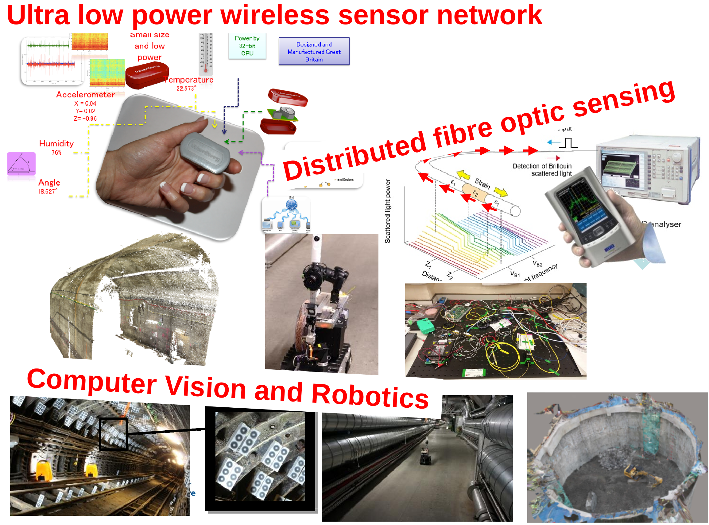
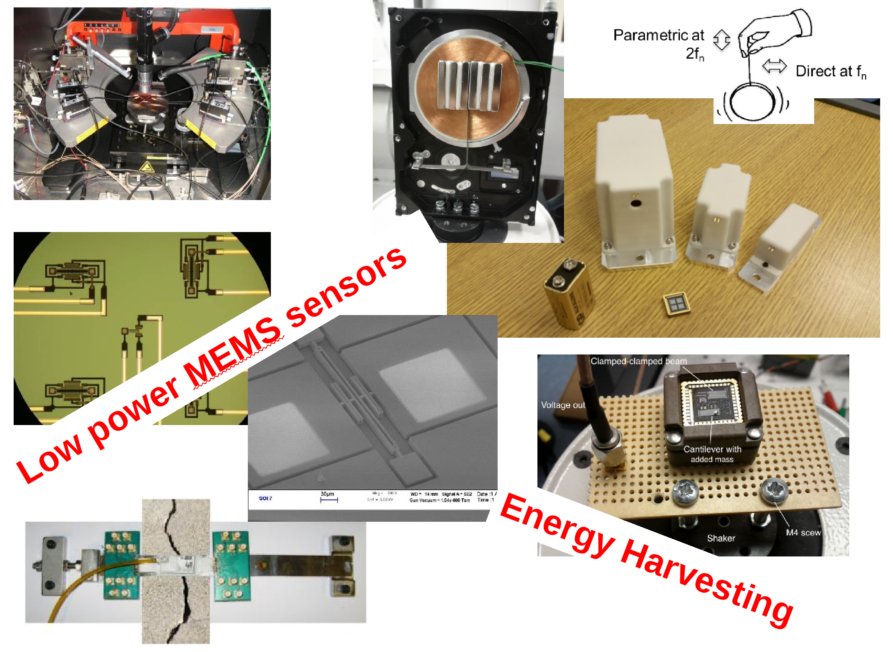
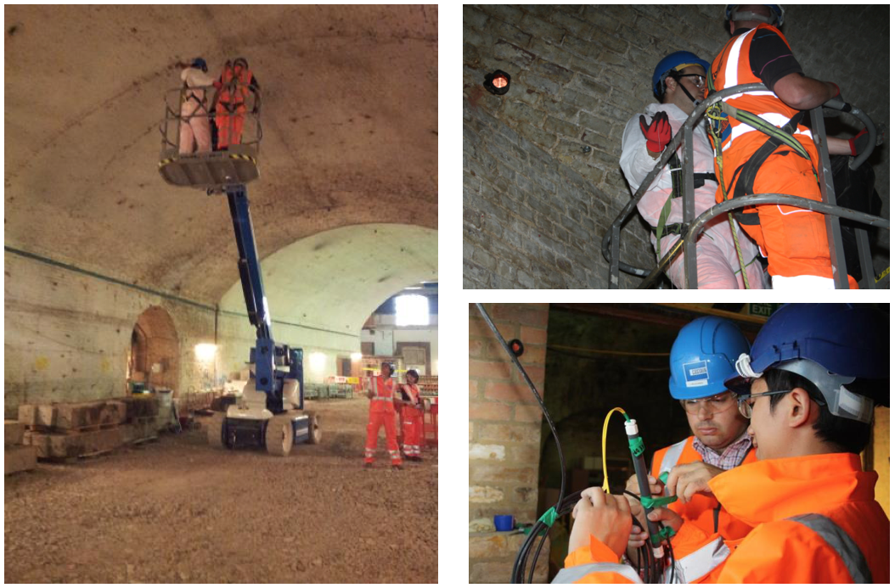
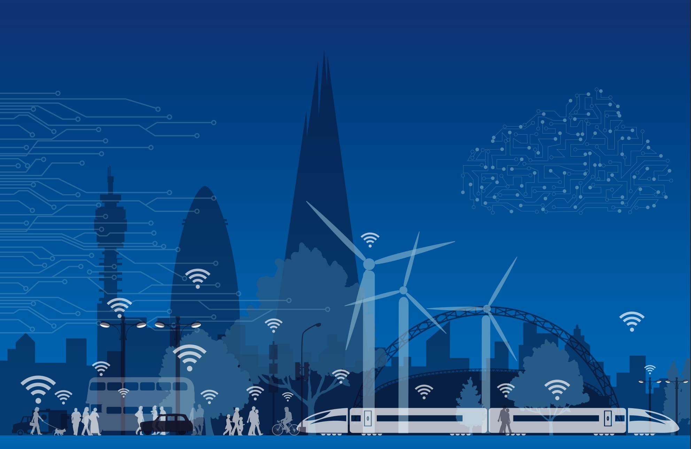

Data analytics, sensing and visualisation for smart cities
Krishna Kumar, kks32@cam.ac.uk
Department of Engineering, University of Cambridge


Kazakh-British Technical University workshop, Churchill College, Cambridge.
National infrastructure plan
- £466B for the next generation of infrastructure by 2020.
High quality infrastructure is essential for supporting productivity growth. Delivering the right infrastructure at a local, regional and national level, across the UK, is […] key to the government’s long-term economic plan.
Victoria station upgrade

Sensing the infrastructure
Sensing the infrastructure
Monitoring applications
Monitoring of piles

Monitoring of tunnels

Monitoring of arches
Monitoring of shaft
Wireless sensor networks
WSN evolution
Utterberry

Utterberry sensors at Eleanor Street

Data analysis from Utterberry sensors
Tunnel after dewatering

WSN - Open standards
Cloud based WSN
- Current WSN development requires complicated software set up
- Adds to steep learning curve
- Longer development cycle
- Develop firmware using any browser on any device
- Download compiled firmware
- Deploy firmware directly to your sensor network

Hypercat
Hypercat is an open, lightweight JSON-based hypermedia catalogue format for exposing collections of uniform resource identifiers.
Hypercat - PAS212
- PAS 212 specifies a common catalogue format that clients can use to discover data in servers that they can use.
- PAS intentionally does not set out to solve all the challenges of data interoperability.
- A `href` may be a URL (usually a URI)
- Metadata
rel-value
e.g.,{"rel":"urn:X-hypercat:rels:hasColour","val":"red"}

Fiber optic monitoring
Distributed Brillouin Sensing

Post Office tunnel

Data analysis - tunnel movement

London Bridge Station
London Bridge Station - Overview
Construction sequence
The Arch - E951
London Bridge Station - Piling
Sensing

- Automatic Total Station (ATS) - absolute displacement of targets placed on the masonry structure
- Strain sensing fibre optics (FO) - continous strain profile and crack size
- Laser scanner - 3D understanding of structural movements
Automatic Total Station

ATS - Data analysis
ATS - Data analysis

It is difficult to understand the response mechanism of the structure. Small cracks are observed at quarter span – do the movements correlate with the cracks?
Laser Scan

Piecewise alignment method (PAM): finds the closest distances between points and shapes from both clouds. Uses this as an initial estimate for fitting small components of one cloud to the other cloud with minimum error. Defines movement in (X,Y,Z).
Laser Scan - Data analysis

Laser Scan - Data interpretation
Fiber Optics - Data interpretation